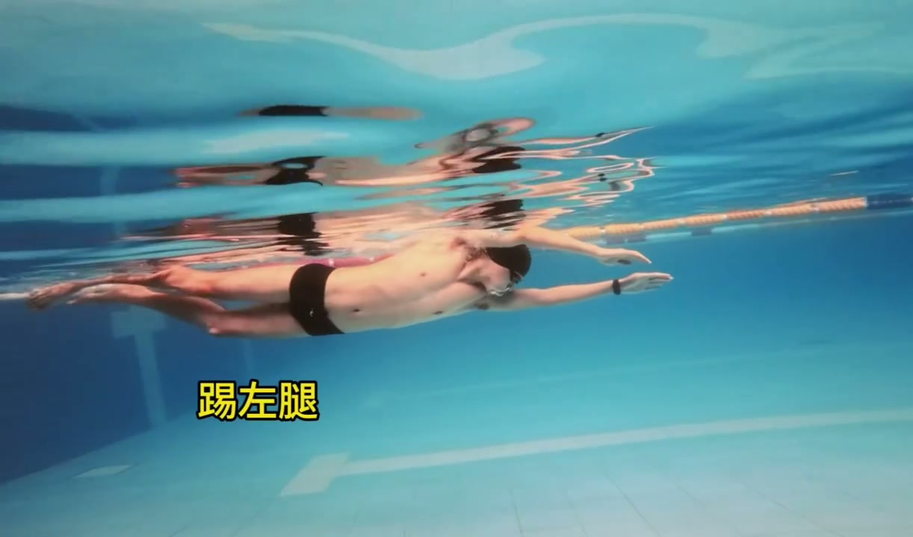
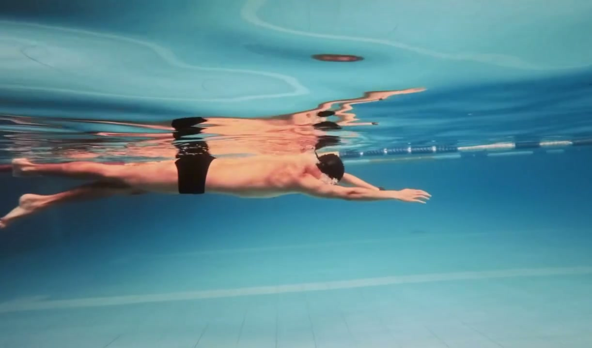
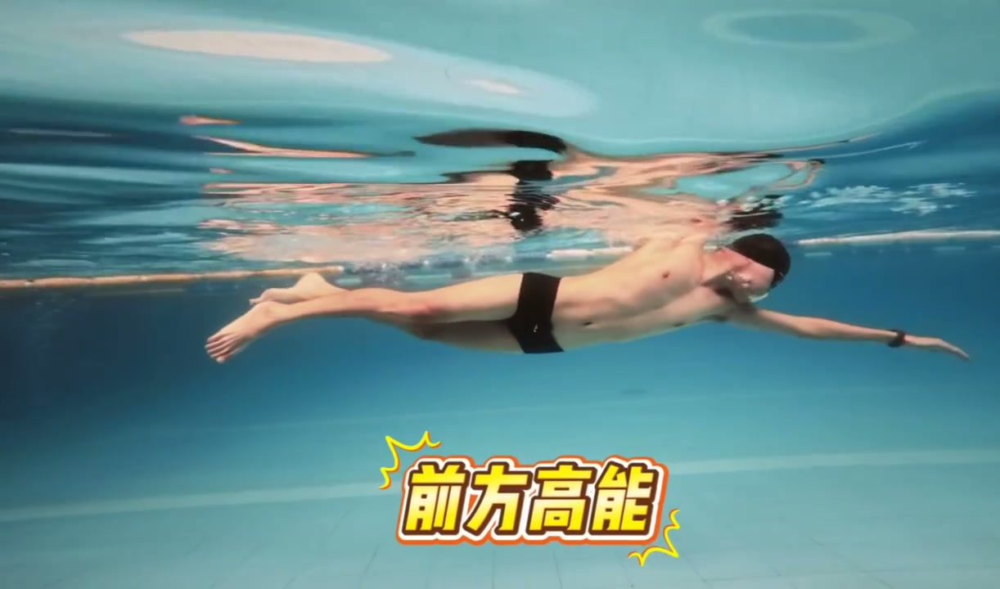
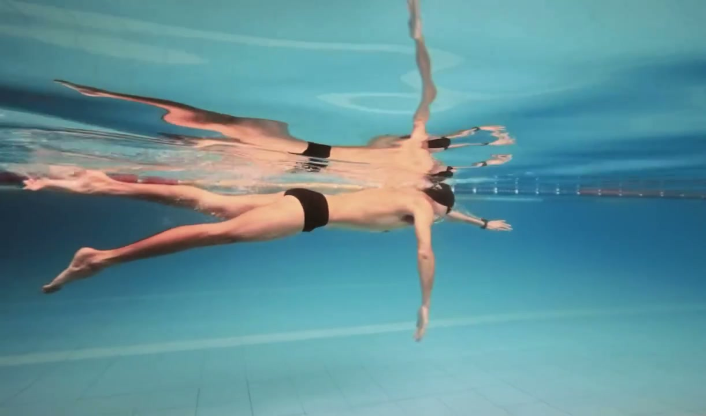
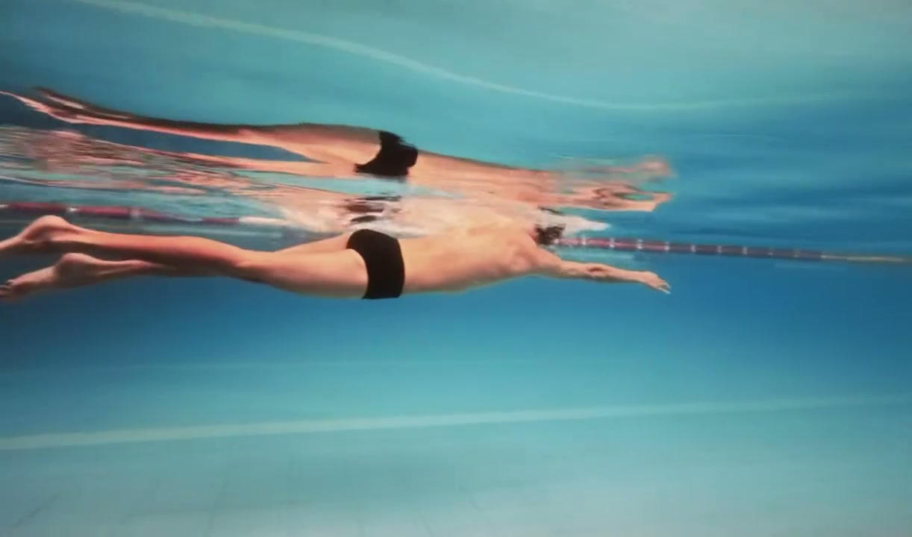

内容要点
本视频无口播内容，全程为特殊打腿方式演示。
知识结构
[00:00→00:05]
传统鞭状打腿回顾
展示常规的自由泳打腿方式作为对比基线，帮助观众识别两种打腿方式的差异。
[00:05→00:12]
特殊打腿方式展示
UP 主展示其独特的打腿技术——可能在发力节奏、腿部幅度或髋部参与方式上与常规打腿有明显不同。
[00:12→00:18]
侧面视角对比
从侧面角度展示打腿动作，让观众更清楚地看到腿部运动轨迹和发力点的区别。
[00:18→00:23]
完整游进展示
在实际游进中展示这种特殊打腿方式的效果，观察推进力和身体位置的差异。
核心结论
打腿方式没有唯一标准答案。关键在于找到适合自己身体条件的发力节奏——有时候一个看似"特别"的打腿方式，恰恰是对你身体结构最有效的选择。
图文实录
传统打腿对比
00:00 – 00:05
视频开始先展示常规的自由泳打腿方式，作为后续特殊打腿的参照。传统打腿以髋关节发力、膝盖微弯、脚踝放松的鞭状动作为主。

[00:01] 传统鞭状打腿：髋发力+膝微弯+踝放松
Traditional whip kick: hip-driven + knees slightly bent + relaxed ankles
特殊打腿技术
00:05 – 00:12
切换到 UP 主的特殊打腿方式。从画面中可以观察到腿部发力节奏、幅度或频率上的明显变化。

[00:06] 特殊打腿：发力节奏与常规方式明显不同
Special kicking: a power rhythm clearly different from the usual
侧面视角
00:12 – 00:18
侧面角度展示让腿部的运动轨迹一览无余。这个角度最适合观察膝盖弯曲程度和脚踝的鞭打幅度。

[00:11] 侧面视角：清晰展示腿部运动轨迹和幅度
Side view: clearly showing leg movement path and range
完整游进
00:18 – 00:23
在实际游进中应用这种打腿方式，可以观察到身体位置是否平稳、推进力是否充分。

[00:16] 完整游进：观察打腿推进力和身体位置
Full swimming: observing the kick's propulsion and body position

[00:21] 游进收尾：整体动作的流畅度展示
Swimming wrap-up: showcasing overall smoothness